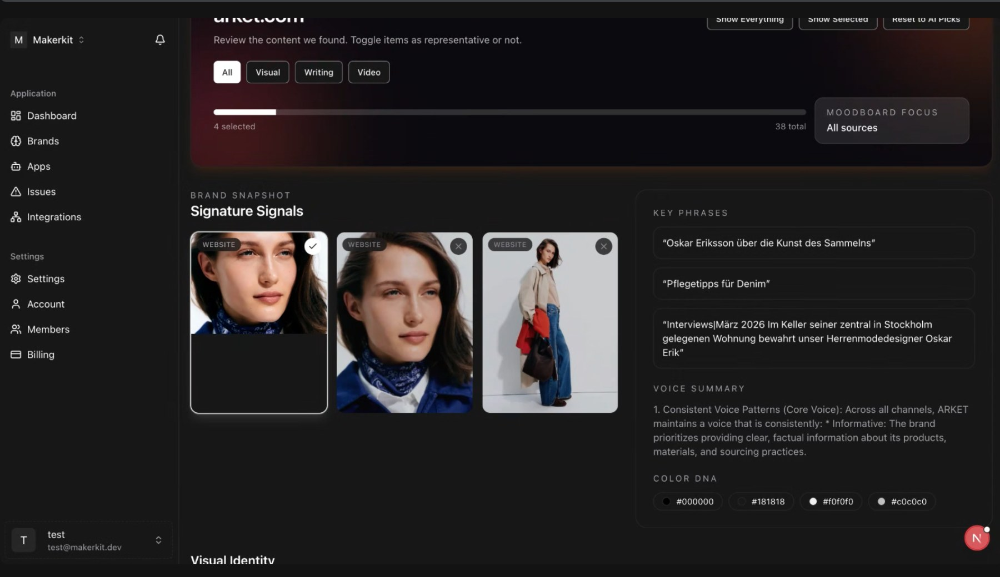
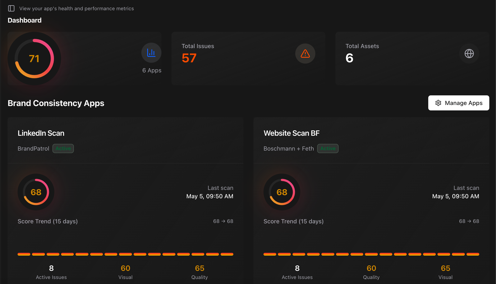
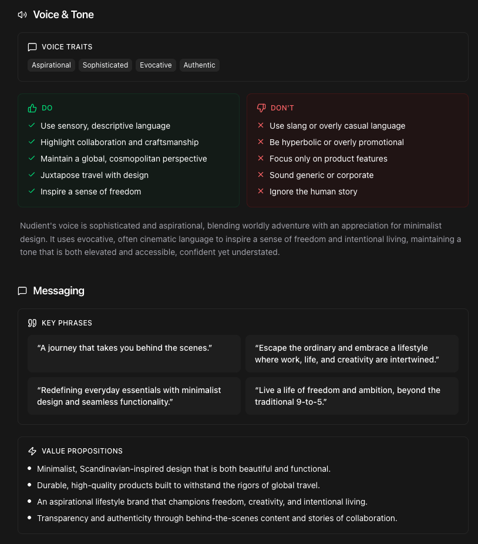
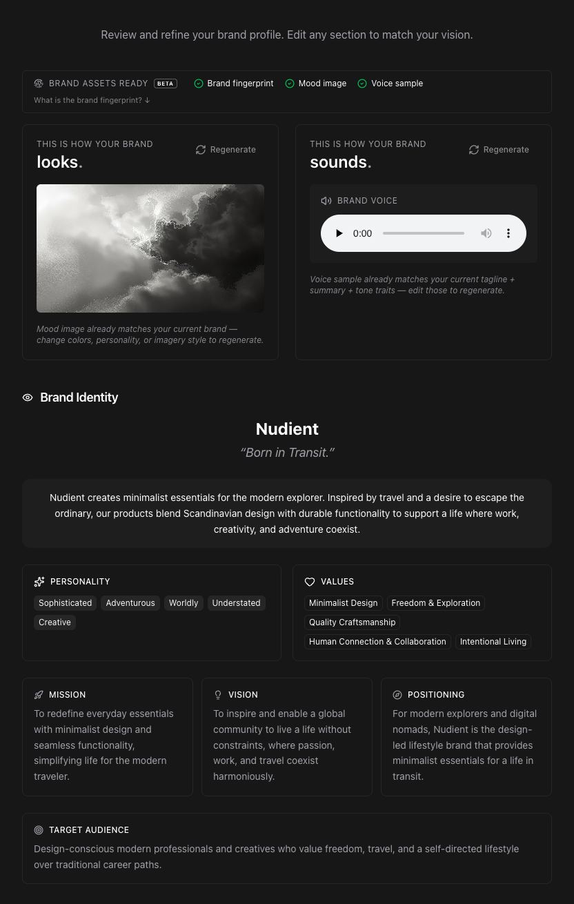

BrandPatrol is an AI platform that centralizes and automates brand governance, freeing creative teams to focus on higher-level thinking. I joined at inception, shaping the brand strategy and training the AI model on the consistency parameters that matter most to its users.
The Challenge
The founders had marketing ideas but no brand framework. Brand consistency is abstract by nature, which made it difficult to sell in a metrics-driven industry. Before users could value the product, they first had to understand why brand consistency mattered at all.


The Approach
The first question was: who actually feels this pain, and how do they talk about it?
I ran qualitative interviews across agency directors, marketing executives, and an advisory board, including Condé Nast stakeholders. From that research, I segmented three ICPs with different triggers, objections, and relationships to consistency. I also mapped how each wanted to interact with the platform, feeding directly into product thinking: functionalities, UX logic, and the AI's core decision-making parameters.
This informed a repositioning built around one clarifying purpose: scale gut feeling. Messaging was built through that lens, including a brand voice that worked across English and German markets.

Before and After
The original platform flagged minor metric deviations, marginal wording variations, and granular changes with no real bearing on whether a brand felt coherent.
Real consistency isn't uniformity. It's a living DNA that expresses differently across platforms. Brand leaders needed a tool that holds the line on what genuinely defines identity, allows creative flexibility, and flags only the deviations that matter.
BrandPatrol was rebuilt around that logic. Rather than policing surface-level variations, it now predicts and communicates the broader judgments experienced brand leaders make every day.

The Result
BrandPatrol launched with relevant functionality, a distinct identity, and messaging that reframed consistency from abstract principle to measurable competitive advantage.
The most direct proof: procurement by Thomson Reuters across its portfolio of 80+ brands. This is a strategic endorsement of the product, the positioning, and the clarity of the problem it was built to solve.